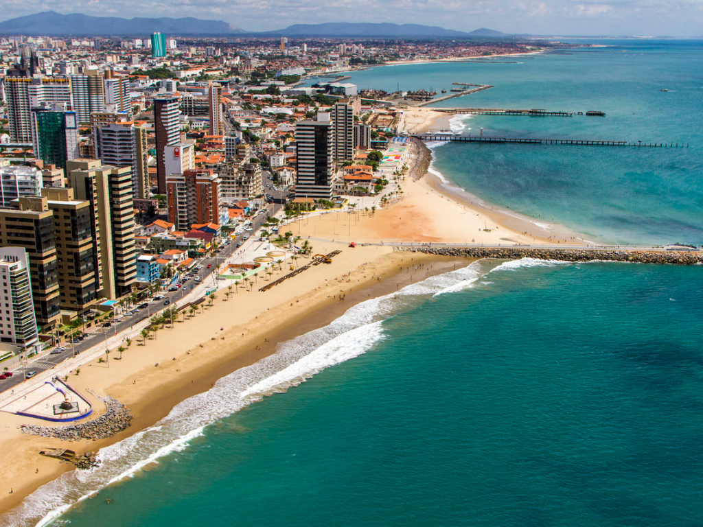

O Ceará é um estado localizado na região Nordeste do Brasil, conhecido por suas belas praias, clima quente e forte cultura popular. Sua capital, Fortaleza, é um dos principais destinos turísticos do país, atraindo visitantes por suas paisagens, vida noturna e culinária típica. O estado possui importantes manifestações culturais, como o humor cearense, o forró e o artesanato regional. Além do turismo, a economia do Ceará se destaca pela indústria, pelo comércio e pela agricultura. Entre os pratos típicos mais conhecidos estão a carne de sol, a tapioca e o baião de dois. O Ceará também é reconhecido pela hospitalidade de seu povo e por suas paisagens naturais, como dunas, falésias e lagoas.

Voltar